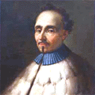

1626–1686
Italian
Series, quadrature
Pietro Mengoli was born in Bologna in 1626 and spent his entire career there. He studied under Bonaventura Cavalieri at the University of Bologna and succeeded him as professor of mechanics in 1647. He was also ordained as a priest and served as the prior of the church of Santa Maria Maddalena from 1660 until his death.
Mengoli's place in this course comes from a single question he posed in 1644: what is the exact value of $\sum_{n=1}^{\infty} \frac{1}{n^2}$? This became known as the Basel problem, and it resisted the efforts of the leading mathematicians of Europe — including the Bernoulli brothers — for nearly a century. Euler finally solved it in 1735, showing the sum equals $\pi^2/6$, in a result that launched his career. In this course, the Basel problem reappears as an elegant application of Parseval's theorem: the answer falls out of energy conservation applied to the Fourier series of $f(x) = x$.
Mengoli's own work on series was substantial. His 1650 Novae quadraturae arithmeticae computed the sums of several infinite series by telescoping — collapsing partial sums into closed forms. He proved the divergence of the harmonic series and found closed forms for series like $\sum \frac{1}{n(n+1)}$. His methods were ahead of their time, but his dense Latin prose and relative isolation in Bologna meant his work was not widely read outside Italy.
| Phase | Page | Referenced for |
|---|---|---|
| Phase 11 | Parseval's Theorem | Posed the Basel problem ($\sum 1/n^2$) in 1644 |
| Phase 11 | Parseval's Theorem | Basel problem resisted attack until Euler's 1735 solution |